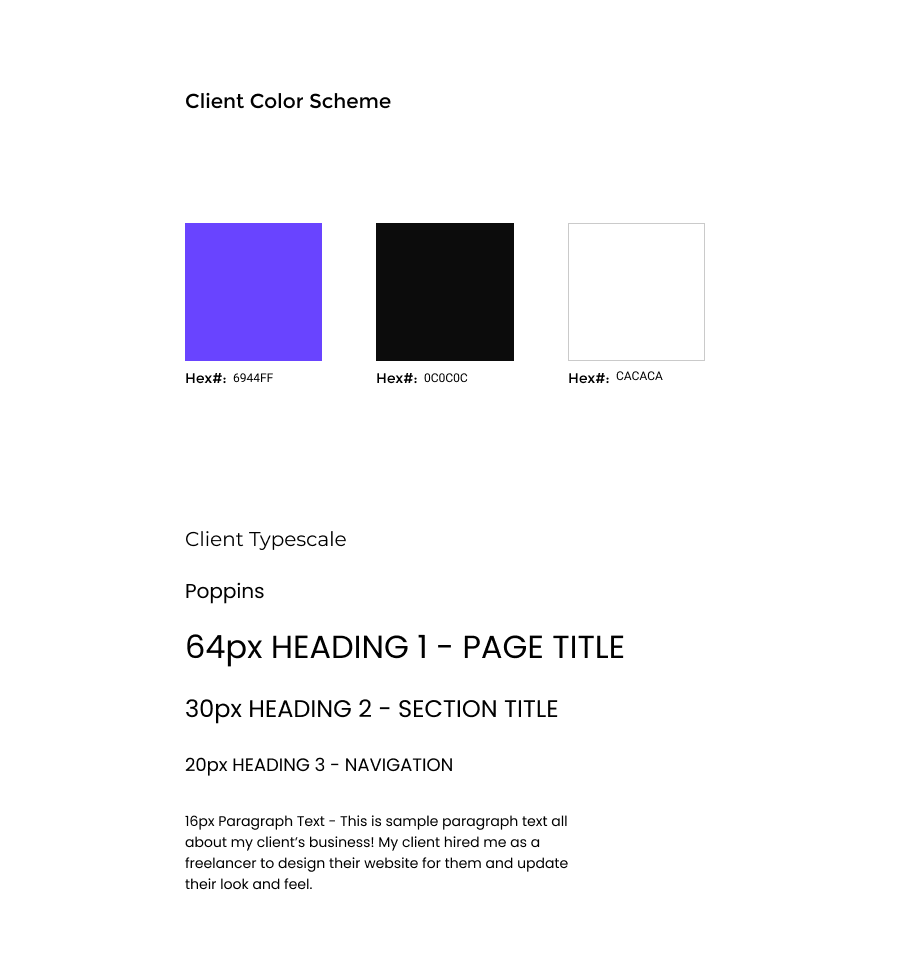
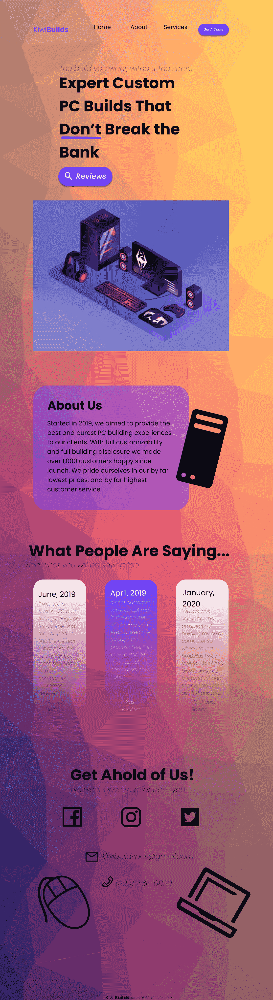

The Mission
Project Overview
This project was a commissioned site made for KiwiBuilds. She wanted a website to showcase her amazing reviews on her PC building skills. Eventually she plans to transfer to a e-commerce website but for now she just wanted something to get her name and brand out there.Project Role
My role in this project was as lead designer. I was to create a set of three mockups/designs that were comprehensive and responsive to desktop, tablet, and mobile screens.The Problem & Goal for the Project
The challenges for this project were not very vast. I had a surprisingly easy time creating this design for the client and for all iterations there were no design tweaks from the client.The goal for this project was to create a bright and colorful website to help KiwiBuilds showcase their personality while also showcasing their expertise in their brand.
The Process
Digital Wireframe
I began by laying out the main elements aimed for the webpage. Starting with desktop first. This step was to mainly make sure there was enough and adequate space for all the elements that KiwiBuilds wanted.
Low-Fidelity Comp
The next low-fidelity comp iterated the main text and picture elements to ensure the aesthetic. Other item positions were tweaked slightly to incorporate the elements.
High-Fidelity Comp
The final high-fidelity comp shows the final design in it's glory. With all colors and backgrounds incorporated to show the final design style. This mockup was finished and compressed to be ready to hand off to a developer.Final Color Scheme and Typography
The Final Design
The Final Mobile Design
Challenges & Takeaways
After completing this site design I realized there were a few hurdles that I encountered.
One was making the site personal and professional at the same time. This feat meant that I had to keep
things looking clean while also showing KiwiBuilds' personality through the site. The other
hurdle was ofcourse, making it responsive and fit to different mobile screens. While I have
experience with this, it always seems to be a challenge to get each page looking how you want it to feel.
The biggest takeaway from this design was seeing how pleased KiwiBuilds was with the result. She not only loved
the design and thought it matched her qualities, but thought that it was going to be a perfect realm to bring more customers in.
Project Conclusion
To conclude, this project resulted in a happy client and a beautiful website design! I worked hard with the client to tweak and perfect her design to help it show personality and a fun playful environment, while also using my UI/UX skills to keep the website looking clean, professional, and most of all aimed to please her audience.